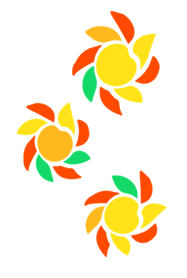
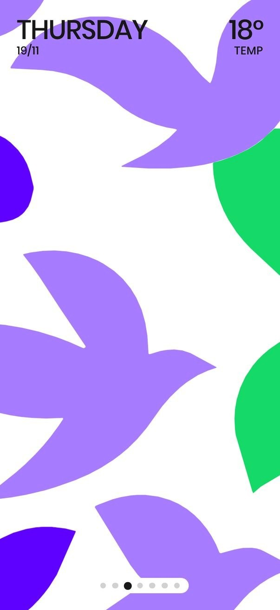
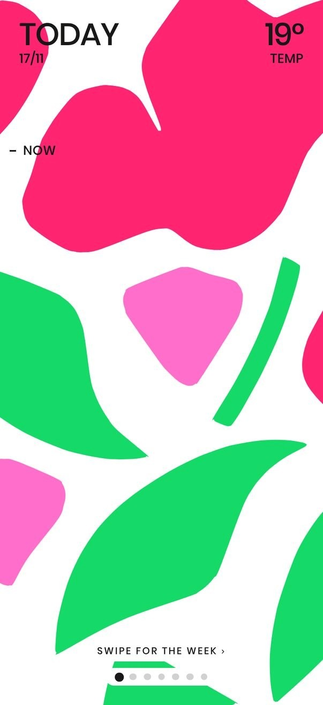
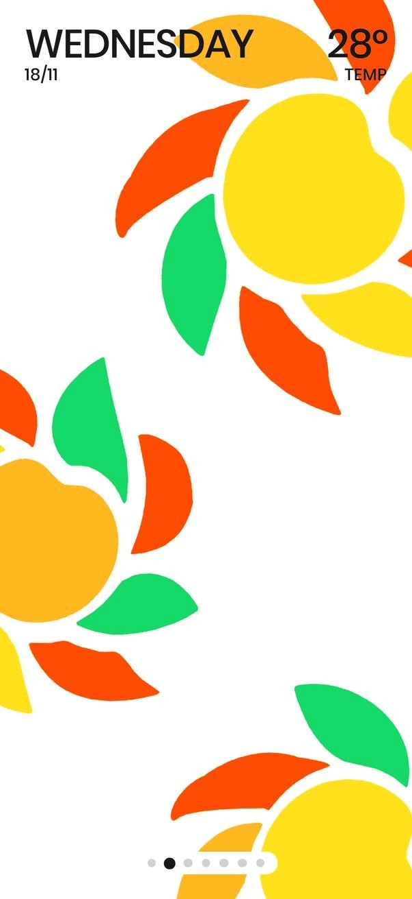
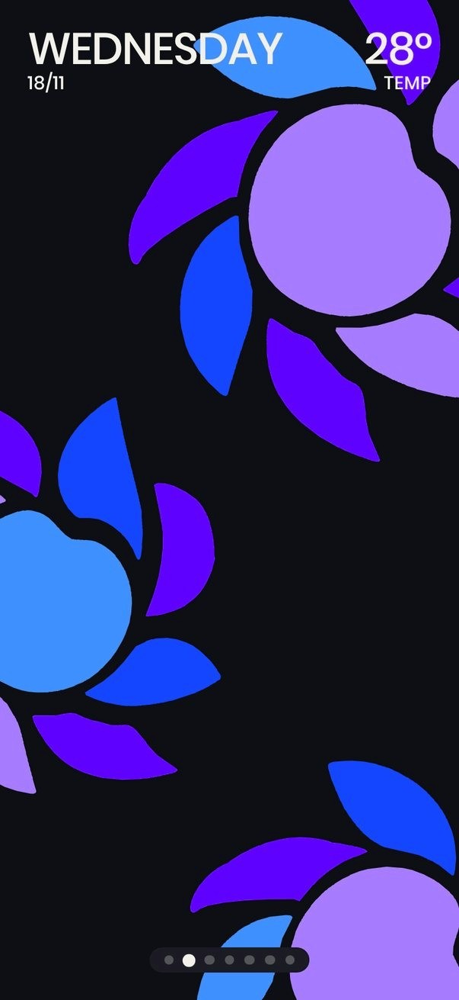
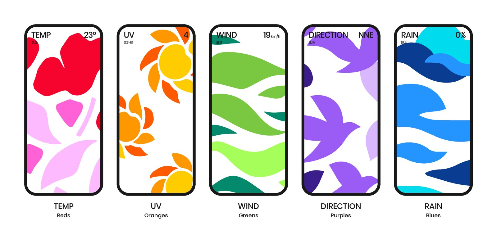
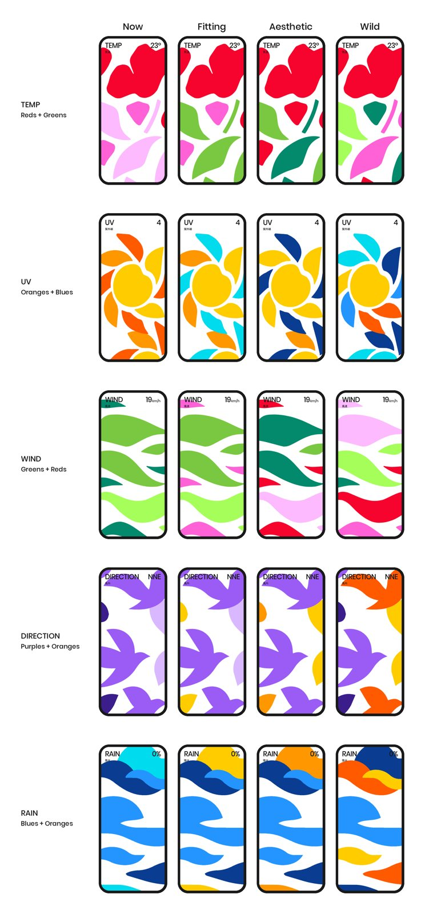
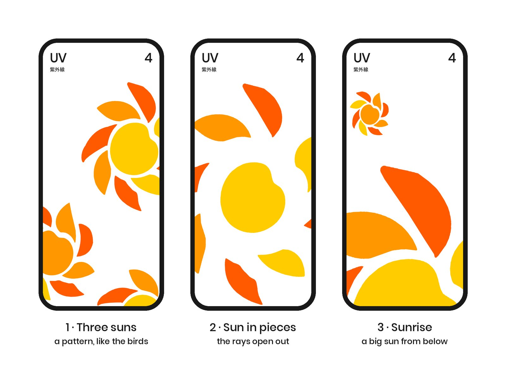
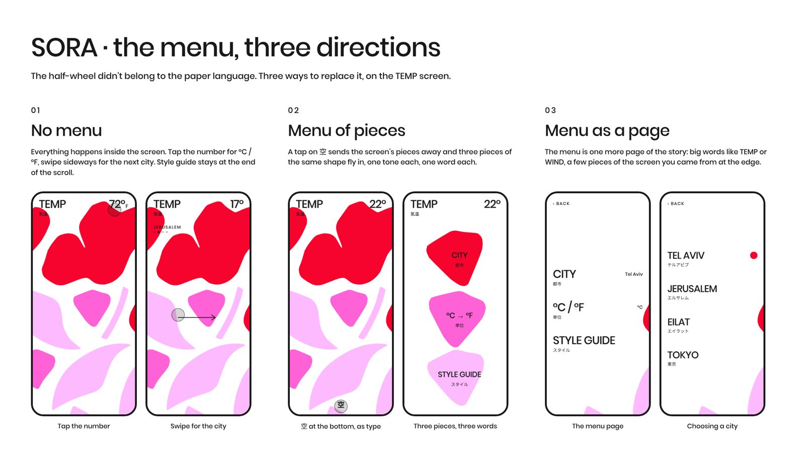
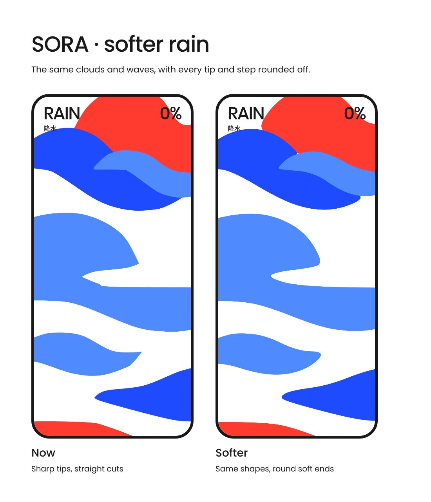

System book
Everything SORA is made of, in one place. The app beside this page is the real one: change a colour, a font or day and night here, and it follows at once.
Where it comes from
Zenji Funabashi (1942–2023) cut flat shapes out of paper in bright, happy colours and turned nature into signs. SORA takes four things from him: the flatness of cut paper, a few bright colours with one green, nature as a sign, and paper pieces that move. More about him →
How to use the app
- Open: the pieces land; you see TODAY, NOW and the temperature.
- Tap anywhere: TEMP → UV → WIND → RAIN. The shape stays.
- Drag NOW down through the next 10 hours.
- Swipe sideways through the next 7 days.
- After sunset the app turns to night by itself.
 Colour
Colour

Typographytype.large9.6% of width · −0.03em
type.small4% of width · +0.02em
type.hint3% of width · +0.14em
Anton, outside the app
Try another family in the app
 Shapes
Shapes

Flat, like cut paper: no gradients, no shadows, no outlines. Each shape fills the whole screen, and tapping or dragging never changes it.
Components
The site's buttons
Motion & states
| GESTURE | WHAT CHANGES | IN THE CODE |
|---|---|---|
| Open | The pieces land | 1.3 s per piece, 170 ms apart |
| Tap | The reading | 0.45 s rise of 8 px and fade |
| Drag NOW | The hour, 10 ahead | snaps to the nearest tick |
| Swipe | The day, 7 ahead | never back before today |
| Sunset | Day to night | 0.7 s colour fade |
States



Offline, the app shows the last numbers saved (updated four times a day). Day 7 is the last day; going back stops at today.
Sketches




